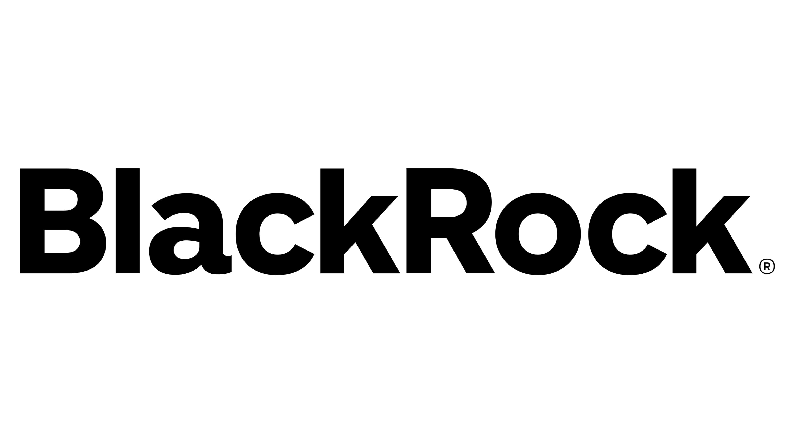

BlackRock
Analyst (August 2024 - Present)
Joining Aladdin Data as an Analyst in 2024, I was a part of the Data Pipeline Engineering team. We created the infrastructure for data entitlements within BlackRock for our enterprise data platform. My role as an individual contributor was heavily software focused, mainly concerned with a tech stack of Java+Spring, React, and Snowflake+SQL; I built full-stack services for external consumption as well as GRPC-inspired APIs for internal stakeholders, from ideation to integration testng to deployment.